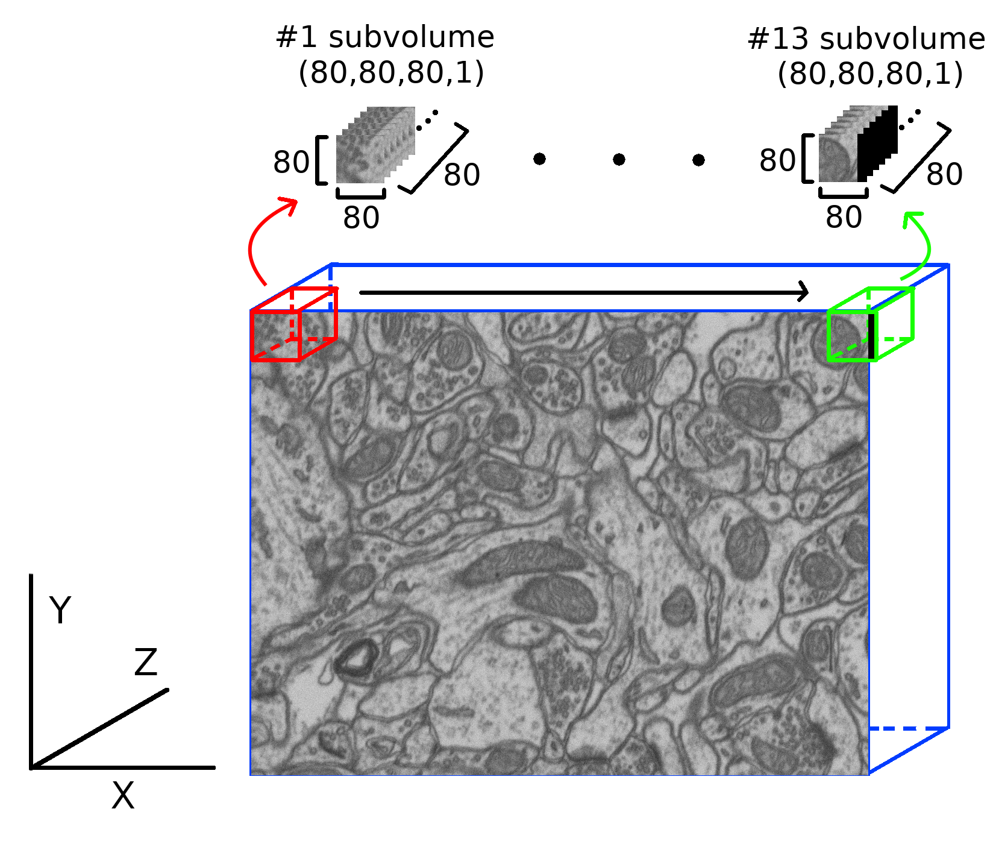

Data manipulation 3D¶
-
data_3D_manipulation.load_and_prepare_3D_data(train_path, train_mask_path, test_path, test_mask_path, image_train_shape, image_test_shape, test_subvol_shape, train_subvol_shape, create_val=True, shuffle_val=True, val_split=0.1, seedValue=42, random_subvolumes_in_DA=False, ov=0, 0, 0, overlap_train=False, use_rest_train=True)[source]¶ Load train, validation and test images from the given paths to create a 3D data representation. All the test data will be used to create a 3D volume of
test_subvol_shapeshape (consideringov).- Parameters
train_path (
str) – Path to the training data.train_mask_path (
str) – Path to the training data masks.test_path (
str) – Path to the test data.test_mask_path (
str) – Path to the test data masks.image_train_shape (
3D tuple) – Dimensions of the images to load. E.g.(x, y, channels).image_test_shape (
3D tuple) – Dimensions of the images to load. E.g.(x, y, channels).train_subvol_shape (
4D tuple) – Shape of the train subvolumes to create. E.g.(x, y, z, channels).test_subvol_shape (
4D tuple) – Shape of the test subvolumes to create. E.g.(x, y, z, channels).create_val (
bool, optional) – If true validation data is created (from the train data).shuffle_val (
bool, optional) – Take random training examples to create validation data.val_split (
float, optional) – % of the train data used as validation (value between0and1).seedValue (
int, optional) – Seed value.random_subvolumes_in_DA (
bool, optional) – To advice the method that not preparation of the data must be done, as random subvolumes will be created on DA, and the whole volume will be used for that.ov (
Tupleof3 floats, optional) – Amount of minimum overlap on x, y and z dimensions. The values must be on range[0, 1), that is,0%or99%of overlap. E. g.(x, y, z).overlap_train (
bool, optional) – To make training subvolumes as overlapping patches usingov.use_rest_train (
bool, optional) – Wheter to use the train data remainder when the subvolume shape selected has no exact division with it. More info atcrop_data()function.
- Returns
X_train (
5D Numpy array) – Train images. E.g.(num_of_images, y, x, z, channels).Y_train (
5D Numpy array) – Train images’ mask. E.g.(num_of_images, y, x, z, channels).X_val (
5D Numpy array, optional) – Validation images (create_val==True). E.g.(num_of_images, y, x, z, channels).Y_val (
5D Numpy array, optional) – Validation images’ mask (create_val==True). E.g.(num_of_images, y, x, z, channels).X_test (
5D Numpy array) – Test images. E.g.(num_of_images, y, x, z, channels).Y_test (
5D Numpy array) – Test images’ mask. E.g.(num_of_images, y, x, z, channels).orig_test_shape (
4D int tuple) – Test data original shape. E.g.(num_of_images, x, y, channels).norm_value (
int) – Normalization value calculated.
Examples
# EXAMPLE 1 # Case where we need to load the data and creating a validation split train_path = "data/train/x" train_mask_path = "data/train/y" test_path = "data/test/y" test_mask_path = "data/test/y" # Data shape is (1024, 768, 165), so each image shape should be this: img_train_shape = (1024, 768, 1) img_test_shape = (1024, 768, 1) # 3D subvolume shape needed train_3d_shape = (80, 80, 80, 1) test_3d_shape = (80, 80, 80, 1) X_train, Y_train, X_val, Y_val, X_test, Y_test, orig_test_shape, norm_value = load_and_prepare_3D_data( train_path, train_mask_path, test_path, test_mask_path, img_train_shape, img_test_shape, val_split=0.1, create_val=True, shuffle_val=True, ov_=(0,0,0), train_subvol_shape=train_3d_shape, test_subvol_shape=test_3d_shape) # The function will print the shapes of the generated arrays. In this example: # *** Loaded train data shape is: (194, 80, 80, 80, 1) # *** Loaded validation data shape is: (22, 80, 80, 80, 1) # *** Loaded test data shape is: (390, 80, 80, 80, 1) # # For the test data, 390 subvolumes have been created. As you may noticed, # a minimum overlap is set (ov=(0,0,0)), leading to more subvolume # creation compared to train+val. # EXAMPLE 2 # As the example 1 but defining a minimum overlap of 50% in both train # and test data. Notice how the number of subvolumes has been increased # X_train, Y_train, X_val, Y_val, X_test, Y_test, orig_test_shape, norm_value = load_and_prepare_3D_data( train_path, train_mask_path, test_path, test_mask_path, img_train_shape, img_test_shape, val_split=0.1, create_val=True, shuffle_val=True, overlap_train=True, ov=(0.5,0.5,0.5), train_subvol_shape=train_3d_shape, test_subvol_shape=test_3d_shape) # The function will print the shapes of the generated arrays. In this example: # *** Loaded train data shape is: (1710, 80, 80, 80, 1) # *** Loaded validation data shape is: (190, 80, 80, 80, 1) # *** Loaded test data shape is: (1900, 80, 80, 80, 1) # # EXAMPLE 3 # As the example 1 but when random_subvolumes_in_DA is True and no validation data # needs to be created. The test data should be of the same shape as the example 1. # However, the returned train data will be the same but adding an extra dimension # on the first axis. This is made to consider the entire data as a unique subvolume. # More information about this in 3D generator. # X_train, Y_train, X_val, Y_val, X_test, Y_test, orig_test_shape, norm_value = load_and_prepare_3D_data( train_path, train_mask_path, test_path, test_mask_path, img_train_shape, img_test_shape, create_val=False, random_subvolumes_in_DA=True, ov=(0,0,0), train_subvol_shape=train_3d_shape, test_subvol_shape=test_3d_shape) # The function will print the shapes of the generated arrays. In this example: # *** Loaded train data shape is: (1, 768, 1024, 165, 1) # *** Loaded test data shape is: (390, 80, 80, 80, 1) # Notice height and width swap because of Numpy ndarray terminology
-
data_3D_manipulation.load_and_prepare_3D_data_v2(train_path, train_mask_path, test_path, test_mask_path, image_train_shape, image_test_shape, test_subvol_shape, train_subvol_shape, create_val=True, shuffle_val=True, val_split=0.1, seedValue=42, random_subvolumes_in_DA=False, ov=0, 0, 0, padding=0, 0, 0, median_padding=False)[source]¶ Load train, validation and test images from the given paths to create a 3D data representation. All the test data will be used to create a 3D volume of
test_subvol_shapeshape (consideringov).The difference between
load_and_prepare_3D_data()is that this function loads 3D images directly from the given path.- Parameters
train_path (
str) – Path to the training data.train_mask_path (
str) – Path to the training data masks.test_path (
str) – Path to the test data.test_mask_path (
str) – Path to the test data masks.image_train_shape (
4D tuple) – Dimensions of the images to load. E.g.(x, y, z, channels).image_test_shape (
4D tuple) – Dimensions of the images to load. E.g.(x, y, z, channels).train_subvol_shape (
4D tuple) – Shape of the train subvolumes to create. E.g.(x, y, z, channels).test_subvol_shape (
4D tuple) – Shape of the test subvolumes to create. E.g.(x, y, z, channels).create_val (
bool, optional) – If true validation data is created (from the train data).shuffle_val (
bool, optional) – Take random training examples to create validation data.val_split (
float, optional) – % of the train data used as validation (value between0and1).seedValue (
int, optional) – Seed value.random_subvolumes_in_DA (
bool, optional) – To advice the method that not preparation of the data must be done, as random subvolumes will be created on DA, and the whole volume will be used for that.ov (
Tupleof3 floats, optional) – Amount of minimum overlap on x, y and z dimensions. The values must be on range[0, 1), that is,0%or99%of overlap. E. g.(x, y, z).padding (
4D Numpy array, optional) – Size of padding to be added on each sidemedian_padding (
bool) – If True the padding value is the median value. If False, the added values are zeroes.
- Returns
X_train (
5D Numpy array) – Train images. E.g.(num_of_images, y, x, z, channels).Y_train (
5D Numpy array) – Train images’ mask. E.g.(num_of_images, y, x, z, channels).X_val (
5D Numpy array, optional) – Validation images (create_val==True). E.g.(num_of_images, y, x, z, channels).Y_val (
5D Numpy array, optional) – Validation images’ mask (create_val==True). E.g.(num_of_images, y, x, z, channels).X_test (
5D Numpy array) – Test images. E.g.(num_of_images, y, x, z, channels).Y_test (
5D Numpy array) – Test images’ mask. E.g.(num_of_images, y, x, z, channels).orig_test_shape (
4D int tuple) – Test data original shape. E.g.(num_of_images, x, y, channels).filenames (
Listofstr) – Loaded train and test filenames. filenames[0] are train filenames and filenames[1] are test filenames.
Examples
# EXAMPLE 1 # Case where we need to load the data and creating a validation split train_path = "data/train/x" train_mask_path = "data/train/y" test_path = "data/test/y" test_mask_path = "data/test/y" # Train data is (15, 1024, 1024, 91), and the test is (5, 1024, 1024, 91), # where (number_of_images, x, y, z), so each image shape should be this: img_train_shape = (1024, 1024, 91, 1) img_test_shape = (1024, 1024, 91, 1) # 3D subvolume shape needed train_3d_shape = (256, 256, 40, 1) test_3d_shape = (256, 256, 40, 1) X_train, Y_train, X_val, Y_val, X_test, Y_test, orig_test_shape, crop_test_shapes, filenames = load_and_prepare_3D_data_v2( train_path, train_mask_path, test_path, test_mask_path, img_train_shape, img_test_shape, val_split=0.1, create_val=True, shuffle_val=True, test_subvol_shape=test_3d_shape, train_subvol_shape=train_3d_shape, ov=(0,0,0)) # The function will print the shapes of the generated arrays. In this example: # *** Loaded train data shape is: (315, 256, 256, 40, 1) # *** Loaded validation data shape is: (35, 256, 256, 40, 1) # *** Loaded test data shape is: (178, 256, 256, 40, 1) #
-
data_3D_manipulation.crop_3D_data_with_overlap(data, vol_shape, data_mask=None, overlap=0, 0, 0, verbose=True, padding=0, 0, 0, median_padding=False)[source]¶ Crop 3D data into smaller volumes with a defined overlap. The opposite function is
merge_3D_data_with_overlap(). :Parameters: * data (4D Numpy array) – Data to crop. E.g.(num_of_images, x, y, channels).vol_shape (
4D int tuple) – Shape of the volumes to create. E.g.(x, y, z, channels).data_mask (
4D Numpy array, optional) – Data mask to crop. E.g.(num_of_images, x, y, channels).overlap (
Tupleof3 floats, optional) – Amount of minimum overlap on x, y and z dimensions. The values must be on range[0, 1), that is,0%or99%of overlap. E. g.(x, y, z).verbose (
bool, optional) – To print information about the crop to be made.padding (
4D Numpy array, optional) – Size of padding to be added on each sidemedian_padding (
bool) – If True the padding value is the median value. If False, the added values are zeroes.
- Returns
cropped_data (
5D Numpy array) – Cropped image data. E.g.(vol_number, x, y, z, channels).cropped_data_mask (
5D Numpy array, optional) – Cropped image data masks. E.g.(vol_number, x, y, z, channels).
Examples
- ::
# EXAMPLE 1 # Following the example introduced in load_and_prepare_3D_data function, the # cropping of a volume with shape (165, 1024, 765) should be done by the # following call: X_train = np.ones((165, 768, 1024, 1)) Y_train = np.ones((165, 768, 1024, 1)) X_train, Y_train = crop_3D_data_with_overlap(
X_train, (80, 80, 80, 1), data_mask=Y_train, overlap=(0.5,0.5,0.5))
# The function will print the shape of the generated arrays. In this example: # **** New data shape is: (2600, 80, 80, 80, 1)
A visual explanation of the process:

Note: this image do not respect the proportions.
# EXAMPLE 2 # Same data crop but without overlap X_train, Y_train = crop_3D_data_with_overlap( X_train, (80, 80, 80, 1), data_mask=Y_train, overlap=(0,0,0)) # The function will print the shape of the generated arrays. In this example: # **** New data shape is: (390, 80, 80, 80, 1) # # Notice how differs the amount of subvolumes created compared to the # first example #EXAMPLE 2 #In the same way, if the addition of (64,64,64) padding is required, the call #should be done as shown: X_train, Y_train = crop_3D_data_with_overlap( X_train, (80, 80, 80, 1), data_mask=Y_train, overlap=(0.5,0.5,0.5), padding=(64,64,64))
-
data_3D_manipulation.crop_3D_data(data, vol_shape, data_mask=None, use_rest=False, verbose=True)[source]¶ Crop 3D data into smaller volumes without overlap. If there is no exact division between the data shape and
vol_shapein a specific dimension it will be discarded or zeros will be added ifuse_restis True.- Parameters
data (
Numpy 4D array) – Data. E.g.(num_of_images, x, y, channels).vol_shape (
4D int tuple) – Shape of the volumes to create. E.g.(x, y, z, channels).data_mask (
Numpy 4D array, optional) – Mask data. E.g.(num_of_images, x, y, channels).use_rest (
bool, optional) – Controls how the rest data will be processed. When there is no exact division between the data shape andvol_shapein a specific dimension, the remainder data is not enough to create another subvolume. If True, that data will be used completing the rest of the subvolume with zeros. IfFalse, that remainder will be dropped (notice that this option will make the data impossible to reconstruct 100% later on). See example 2 for more info.verbose (
bool, optional) – To print information about the crop to be made.
- Returns
cropped_data (
Numpy 5D array) – data data separated in different subvolumes with the provided shape. E.g.(subvolume_number, ) + shape.cropped_data_mask (
Numpy 5D array) – data_mask data separated in different subvolumes with the provided shape. E.g.(subvolume_number, ) + shape.
Examples
# EXAMPLE 1 # Crop into subvolumes a volume with shape (165, 1024, 765) X_train = np.ones((165, 768, 1024, 1)) Y_train = np.ones((165, 768, 1024, 1)) X_train, Y_train = crop_3D(X_train, (80, 80, 80, 1), data_mask=Y_train) # The function will print the shape of the generated arrays and the data # discarded on each axis ``(x,y,z)``, as use_rest is False # [...] # Pixels dropped per dimension: (48,64,5) # [...] # **** New data shape is: (216, 80, 80, 80, 1) # EXAMPLE 2 # As the first example but using all the data X_train, Y_train = crop_3D(X_train, (80, 80, 80, 1), data_mask=Y_train, use_rest=True) # The function will print the shape of the generated arrays. In this example: # **** New data shape is: (390, 80, 80, 80, 1)
A visual explanation of example 2:
As you may noticed, as
use_rest=Truethe last subvolume is filled with zeros (black) instead of been discarded. Thus, more subvolumes have been created.Adding zeros to all the axis when they do not have an exact division could not be the best approach in all cases. In example 2, the amount of pixels along x and y axis are not to much, however, for the z axis, that amount is high considering that we only have about 165 slices. To notify the user, the method also prints the number of zeros added per each axis
(x,y,z)as follows:X_train, Y_train = crop_3D(X_train, (80, 80, 80, 1), data_mask=Y_train, use_rest=True) # [...] # Zeros added per dimension: (32,16,75) # [...] # **** New data shape is: (390, 80, 80, 80, 1)
{kind=link}
-
data_3D_manipulation.merge_3D_data_with_overlap(data, orig_vol_shape, data_mask=None, overlap=0, 0, 0, verbose=True, padding=0, 0, 0)[source]¶ Merge 3D subvolumes in a 3D volume with a defined overlap.
The opposite function is
crop_3D_data_with_overlap().- Parameters
data (
5D Numpy array) – Data to crop. E.g.(volume_number, x, y, z, channels).orig_vol_shape (
4D int tuple) – Shape of the volumes to create.data_mask (
4D Numpy array, optional) – Data mask to crop. E.g.(volume_number, x, y, z, channels).overlap (
Tupleof3 floats, optional) – Amount of minimum overlap on x, y and z dimensions. Should be the same as used incrop_3D_data_with_overlap(). The values must be on range[0, 1), that is,0%or99%of overlap. E. g.(x, y, z).verbose (
bool, optional) – To print information about the crop to be made.padding (
4D Numpy array, optional) – Size of padding to be added on each side
- Returns
merged_data (
4D Numpy array) – Cropped image data. E.g.(num_of_images, x, y, channels).merged_data_mask (
5D Numpy array, optional) – Cropped image data masks. E.g.(num_of_images, x, y, channels).
Examples
# EXAMPLE 1 # Following the example introduced in crop_3D_data_with_overlap function, the # merge after the cropping should be done as follows: X_train = np.ones((165, 768, 1024, 1)) Y_train = np.ones((165, 768, 1024, 1)) X_train, Y_train = crop_3D_data_with_overlap( X_train, (80, 80, 80, 1), data_mask=Y_train, overlap=(0.5,0.5,0.5)) X_train, Y_train = merge_3D_data_with_overlap( X_train, (165, 768, 1024, 1), data_mask=Y_train, overlap=(0.5,0.5,0.5)) # The function will print the shape of the generated arrays. In this example: # **** New data shape is: (165, 768, 1024, 1) # EXAMPLE 2 # In the same way, if no overlap in cropping was selected, the merge call # should be as follows: X_train, Y_train = merge_3D_data_with_overlap( X_train, (165, 768, 1024, 1), data_mask=Y_train, overlap=(0,0,0)) # The function will print the shape of the generated arrays. In this example: # **** New data shape is: (165, 768, 1024, 1) # EXAMPLE 3 # On the contrary, if no overlap in cropping was selected but a padding of shape # (64,64,64) is needed, the merge call should be as follows: X_train, Y_train = merge_3D_data_with_overlap( X_train, (165, 768, 1024, 1), data_mask=Y_train, overlap=(0,0,0), padding=(64,64,64)) # The function will print the shape of the generated arrays. In this example: # **** New data shape is: (165, 768, 1024, 1)